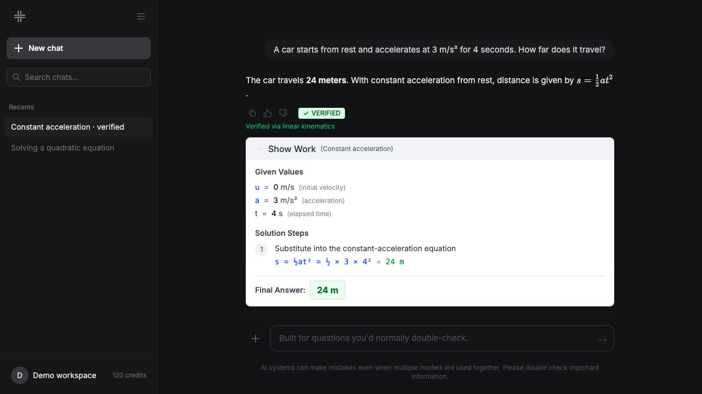
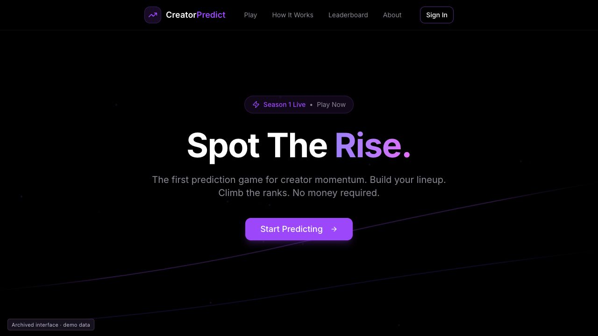
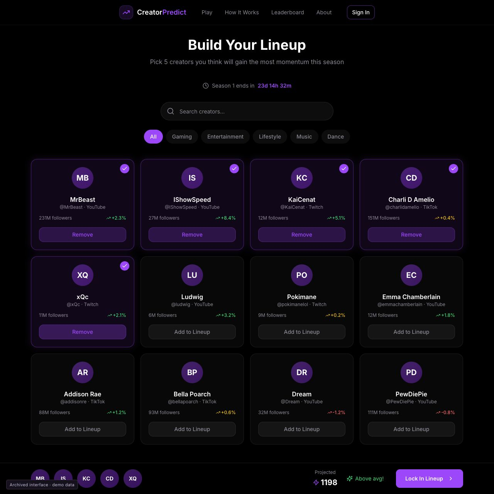
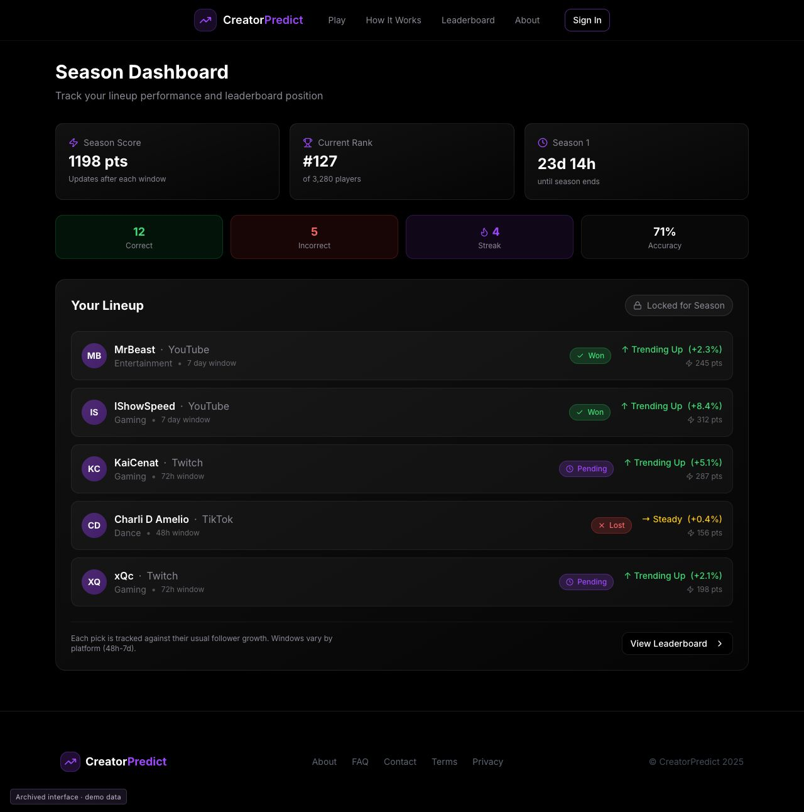
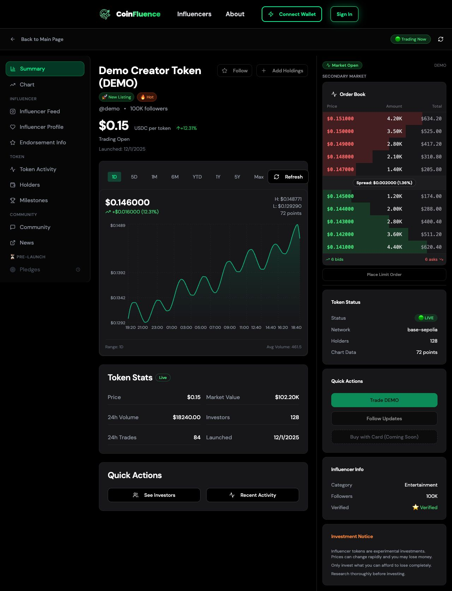
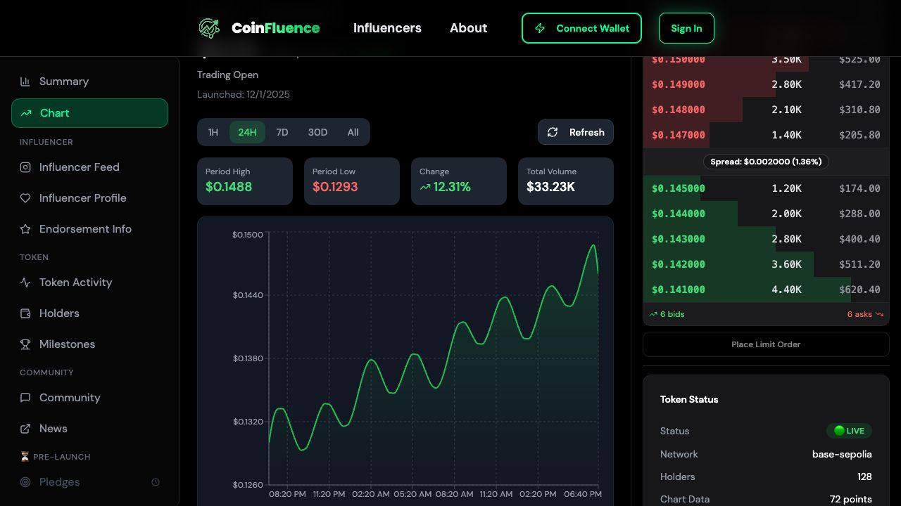

I’m a junior at Freedom High School in South Riding, Virginia. I build apps and websites, and I’ve done research on AI systems and natural language processing. Below is everything I’ve worked on, newest first.
WindTexter hides a real message inside ordinary text. So does this paragraph. The highlighted letters spell “hire me.”
A book manuscript I co-authored with Massieh Kordi Boroujeny, titled
How AI Data Centers Work: Architecture, Communication, Telemetry,
and Security. It covers how GPUs talk to each other when they
train one model together.
I drew the diagrams that trace data moving between GPUs inside a single
server and across a network of servers, and I made the presentations that
walk through them. I also compared the records kept by GPUs, network
switches, and job schedulers to show how an operator could catch
unexpected traffic in the middle of a training run.
CrossCheck
Team project, AI answer verification
A web app that checked the claims in an AI-generated answer. Claims it
could test were sent to the Z3 theorem prover or the SymPy math engine,
and the user saw the result along with each calculation step. Anything
it couldn’t check was marked unverified instead of being passed along
as true.
We launched it publicly as four Docker services on AWS ECS Fargate: an
API, Z3, SymPy, and a physics service, connected over a private network
with AWS Cloud Map. I used Claude as a coding partner while I learned
private networking, credential handling with Secrets Manager, and how
to debug a deployment that won’t come up. The project has since wrapped up.
The chat screen, where you type a question you’d normally double-check.

A verified answer to a kinematics question. The Show Work panel lists the given values, the equation used, and each step.
CreatorPredict
Web developer and head of business development
A site where fans predicted which creators would grow their audiences
and earned points when they called it right. Each season, players picked
a lineup of five creators, and every pick was scored against that
creator’s usual follower growth.
I built the site from scratch with Claude as a coding partner and wrote
the prediction and scoring features. On the business side, I put
together the partnership materials we sent to creators who wanted to join.

The landing page.

Building a lineup. You choose five creators and see a projected score before locking it in.

The season dashboard, with your score, rank, accuracy, and how each pick is doing.
CoinFluence
Co-founder
A platform idea that would let creators launch their own cryptocurrency
tokens for fans to buy, hold, and trade. I helped shape the concept,
found creators who might be a good fit, and wrote outreach explaining
how it could work with each one’s content and audience.
The screenshots are from our demo, which ran on a test network with
mock currency, so no real money was involved.
The landing page for the test network demo.

A demo creator token’s page, with its price chart, order book, and stats.

A closer look at the price chart and order book.
WindTexter
Research intern, George Mason University
A research app that hides a private message inside ordinary-looking
text, so what actually gets sent reads like a normal message.
I worked on parts of the SwiftUI iOS app and its Python Flask backend,
and connected the app to SMS and email delivery. I also built the chat
view, where you can switch between the real message and the cover text
that was actually sent.
SwiftUI, Python, Flask
Refined Harmony
iOS app
An iPhone app for people who want to hear their audio in a loud place
but can’t afford noise-canceling headphones.
It uses AVAudioEngine to listen to the background noise and turns
playback up or down as the room gets louder or quieter. The goal was to
make the headphones people already own easier to follow.